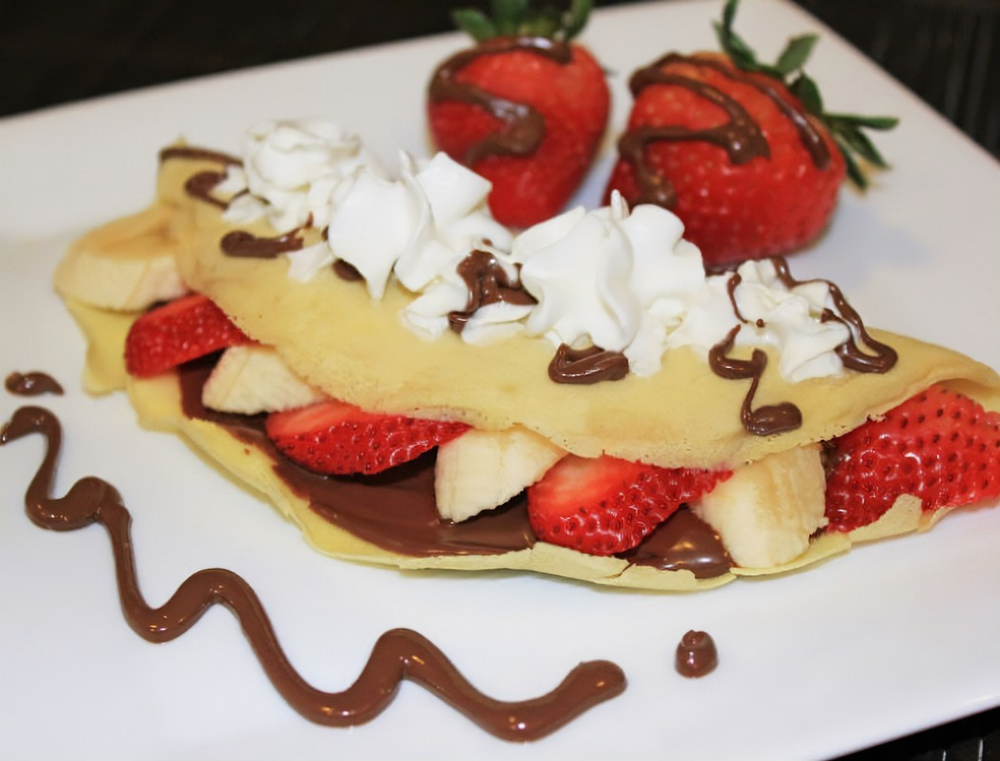

Mairely Peñaloza Cardoz
SI ERES FANATICO DE LOS POSTRES , ¡ESTAS DELICIOSAS CREPAS TE ENCANTARAN! FACIL,RAPIDO,ECONOMICAS Y SOBRE TODO MUY SABROSAS !
Esta receta es muy sencilla , nutritiva e incluso hasta los más pequeños amaran y con simples ingredientes encontrados en casa seras capaz de ejecutarla.
Paso 1: PREPARA los ingredientes y utensilios.
Paso 2: CIERNE la harina y mezcla con la leche y los huevos..
Paso 3: BATE la mezcla durante 7 minutos para integrar por completo; agrega la sal y el azúcar. Cuela y deja reposar por 5 minutos.
Paso 4: CALIENTA una sartén con una cucharadita de mantequilla. Vierte una porción de masa y distribuye. Cuece por 30 segundos, voltea y cocina hasta que esté cocida
Paso 5: EXTIENDE sobre la crepa una cucharada de queso crema, dobla en cuatro y agrega mermelada de fresa. Decora con trozos de fresa y hojas de meta.
Paso 6:¡DISFRUTA!
| Propocion 57074.3 kcal= 238Kj | |||||||
|---|---|---|---|---|---|---|---|
| Carbohidratos | Gluten | Grasas | Grasas Saturadas | Solido | Azucares | ||
| 57Gr | 5704.3 kcal | 208.4g | 3.1g | 912.2g | 67.2g | 289.5mg | 2.5g |
¿Te gustaría probar algunas deliciosas recetas de postres? ¡Haz clic en el enlace a continuación para empezar!
Ver Recetas de Postres